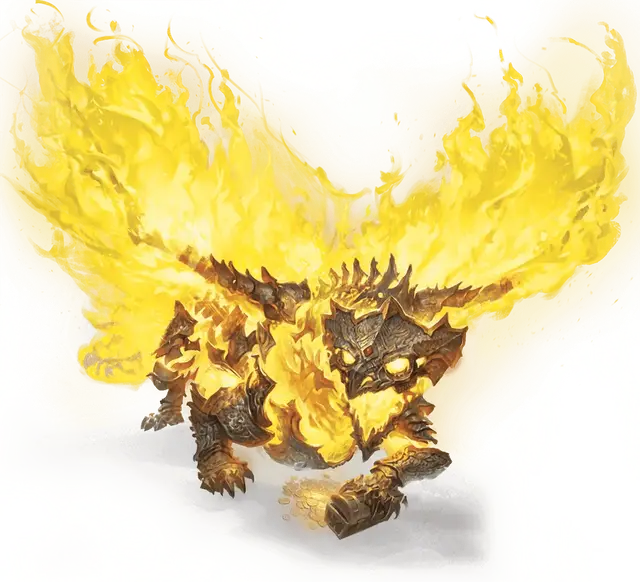

Полый дракон
Hollow Dragon
Огромная Нежить, любое мировоззрение

Класс Доспеха 19 (природный доспех)
Хиты 241 (21к12 + 105)
Скорость 40 футов, летая 80 футов
| мод | спас | ||
|---|---|---|---|
| СИЛ | 23 | +6 | +6 |
| ЛОВ | 12 | +1 | +1 |
| ТЕЛ | 21 | +5 | +11 |
| мод | спас | ||
|---|---|---|---|
| ИНТ | 16 | +3 | +9 |
| МДР | 13 | +1 | +7 |
| ХАР | 21 | +5 | +11 |
Навыки Восприятие +13, История +15, Магия +9
Сопротивление урону некротическая энергия
Иммунитет к урону излучение, яд
Иммунитет к состояниям глухота, испуг, истощение, отравление, очарование, паралич
Чувства слепое зрение 60 футов, тёмное зрение 120 футов, пассивное Восприятие 23
Языки Общий, Драконий
Опасность 18 (20000 опыта)
Бонус мастерства +6
Особенности
Легендарное сопротивление (3/день). Если полый дракон провалит спасбросок, он может вместо этого сделать спасбросок успешным.
Перестройка. Когда хиты полого дракона уменьшаются до 0, его тело распадается на девять частей: две руки, две ноги, два крыла, хвост, туловище и голова. Каждая часть представляет собой Большой объект с КД 19, 27 хитами и иммунитетом к урону ядом и урону психической энергией. Через 1к6 дней, если все части все еще находятся в пределах 6 миль друг от друга, они все телепортируются к месту расположения головы и сливаются с ней, после чего полый дракон восстанавливает все свои хиты и снова становится активным.
Действия
Мультиатака. Полый дракон совершает одну атаку Укусом и две Когтями, и он может использовать истощающее Присутствие.
Укус. . Рукопашная атака оружием: +12 к попаданию, досягаемость 10 фт., одна цель. Попадание: 17 (2к10+6) колющего урона плюс 9 (2к8) урона излучением.
Коготь. . Рукопашная атака оружием: +12 к попаданию, досягаемость 5 фт., одна цель. Попадание: 13 (2к6+6) рубящего урона.
Истощающее присутствие. Каждое существо по выбору полого дракона в пределах 60 фт. от него должно совершить спасбросок Мудрости Сл 19. При провале скорость существа уменьшается вдвое, и он получает помеху на броски атаки до конца своего следующего хода. При успехе существо становится невосприимчивым к истощающему присутствию этого полого дракона в течение 24 часов.
Сияющее дыхание (перезарядка 5-6). Полый дракон выдыхает сияющее пламя в 60-футовом конусе. Все существа в этой области должны совершить спасбросок Ловкости Сл 19, получая 54 (12к8) урона излучением при провале или половину этого урона при успехе.
Легендарные действия
Полый дракон может совершить 3 легендарных действия, выбирая из представленных ниже вариантов. За один раз можно использовать только одно легендарное действие, и только в конце хода другого существа. Полый дракон восстанавливает использованные легендарные действия в начале своего хода.
Коготь. Полый дракон совершает атаку одним Когтем.
Призрачное связывание (стоит 2 действия). Полый дракон создает эфирные связи вокруг существа, которое он может видеть в пределах 60 фт.. Цель должна преуспеть в спасброске Силы Сл 19, иначе будет опутана до конца следующего хода дракона.
Громовая чешуя (стоит 3 действия). Внезапный громкий звенящий звук, болезненно интенсивный, вырывается из каркаса полого дракона. Все существа в пределах 10 фт. от полого дракона должны совершить спасбросок Телосложения Сл 19, получая 24 (7к6) урона звуком при провале или половину этого урона при успехе.
Описание
В отличие от драконов, которые исследуют некромантию ради власти, некоторые металлические драконы рассматривают нежить как средство достижения благородной цели. Ради защиты артефакта или выполнения клятвы дракон может превратиться в полого дракона, становясь нежитью до тех пор, пока эта цель не будет достигнута.
Как следует из названия, полый дракон - это чешуя металлического дракона, наполненная сияющей энергией. В зависимости от первоначального вида дракона, эта энергия может принимать вид пламени, молнии или туманных паров.
Полые драконы не терпят, чтобы их отвлекали от их бессмертной цели. Их энергия настолько сильна, что их тела восстанавливаются, если их уничтожить.
Когда они выполняют свое предназначение, большинство полых драконов принимают смерть, которую они так долго избегали. Но другие ищут новые задачи, чтобы поддерживать себя — или цепляются за состояние нежити из чистого упрямства или привычки.